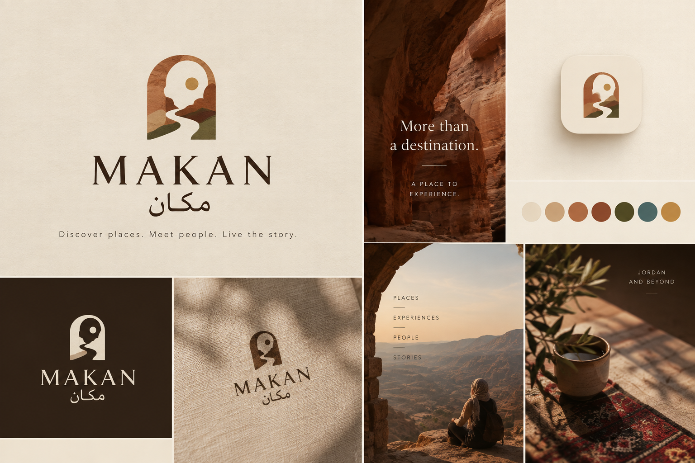

What is Included
- All farm-fresh ingredients and heirloom spices
- Traditional cotton cooking apron and kitchenware to use
- Shared four-course sit-down family meal with Arabic coffee and mint tea
- Printed recipe card booklet to take home

Category: 🍴 Food & Culinary Heritage
Location: Jabal Al-Weibdeh, Amman Governorate, Jordan
Hosted by: Beit Sitti (Maria Haddad) • ★ 5.0 (54 reviews)


Step into the sunlit stone terrace of a historic home in Jabal Al-Weibdeh. Under the guidance of our hosts, you will prepare a full four-course traditional meal using heirloom family recipes passed down across generations. From kneading flatbread to grinding wild sumac and slowly simmering authentic regional dishes, this session is an intimate celebration of Levantine hospitality and culinary history.
Select your preferred date and party size to reserve your spot.
Attended August 2026 • ★★★★★ 5/5
"Far more than a simple cooking class. Sitting around the stone courtyard listening to stories behind every spice was unforgettable."
Attended July 2026 • ★★★★★ 5/5
"The food was delicious, but the warmth of the hosts was the true magic. Highly recommend to anyone visiting Amman."